Transient Thermal Analysis for Process Optimization: A Comparative Study of Lumped Capacitance Modeling and Finite Element Simulation
Automated Hot Nut Insertion in Polycarbonate Components
Rafi NASRALAH, ENSET Mohammedia (Building on SMCV Internship Experience)
Download Full Study Report (PDF)The Core Problem
The core problem this self-initiated research addresses is the quantifiable uncertainty of the hot-insertion process cycle time and the associated risk of thermal damage to the polycarbonate component. The fundamental question being answered is: "What is the true, validated time required for the brass insert nut to reach the optimal insertion temperature of $170\degreeC$ while stacked in the automated feeder?" This required replacing the simplistic, unreliable theoretical estimate with a high-fidelity numerical prediction to ensure process efficiency and structural integrity, without relying on estimated heat transfer coefficients or ignoring the crucial nut-to-nut thermal behavior.
Study Objective
The primary objective of this exploration is to determine the true, validated time required for the brass insert nut to reach the optimal insertion temperature ($\mathbf{170\degreeC}$) while stacked in the automated feeder, thereby directly refining the design of the Automatic Hot-Insertion Press.
Sub-Objectives:
- Quantify Analytical Flaw: Mathematically derive the heating curve using the Lumped Capacitance Model (LCM) to establish a theoretical $t_{\text{LCM}}$.
- Model Real-World Physics: Develop a high-fidelity Transient Thermal FEA model in ANSYS that explicitly accounts for the 3D geometry (grooves), the nut stack, and contact physics (air gap, radiation), eliminating the uncertainty of the estimated coefficient $h_{\text{eff}}$.
- Validate and Optimize: Compare the numerical heating curve ($t_{\text{ANSYS}}$) against the theoretical curve ($t_{\text{LCM}}$) to quantify the error and establish the final, validated minimum heating time necessary for production cadence.
Comparative Analysis: Theory vs. Simulation
Method 1: Lumped Capacitance Model (LCM)
A simplified theoretical approach assuming uniform internal temperature. Relied on an estimated effective heat transfer coefficient ($h_{\text{eff}}$) and neglected 3D geometry (nut grooves, stacking effects).
Result: $t_{\text{LCM}} = 4.22\text{ s}$
Method 2: Finite Element Analysis (FEA)
A high-fidelity numerical simulation (ANSYS Mechanical) accounting for transient heat transfer, actual 3D geometry, material properties, and contact thermal resistance between nuts.
Result: $t_{\text{ANSYS}} = \mathbf{3.28\text{ s}}$
Key Finding: The Discrepancy
The FEA revealed significantly faster heating ($\approx$ 28.7% quicker) than the LCM predicted. Analysis of heat flux vectors (see gallery) confirmed that axial heat conduction between stacked nuts provided a major secondary heat path, a factor ignored by the simplified LCM.
Visual Evidence Gallery

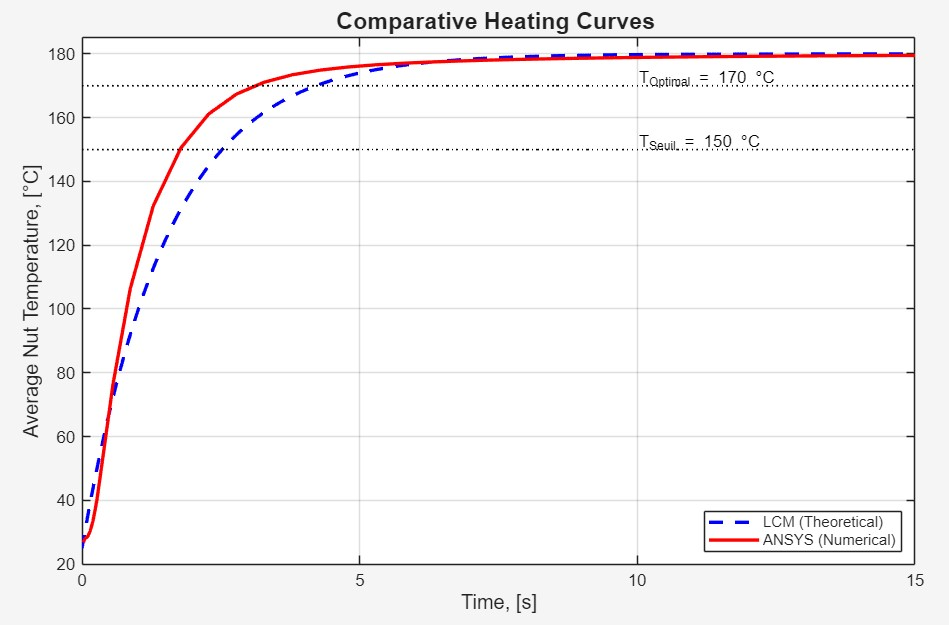

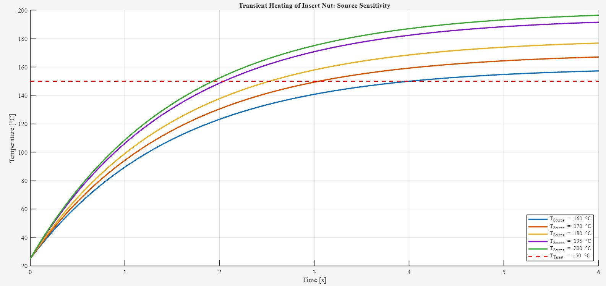
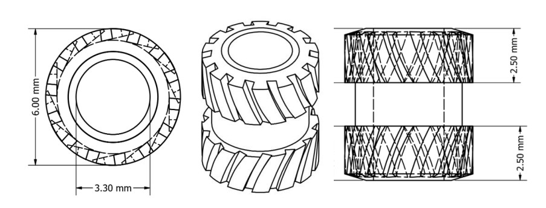
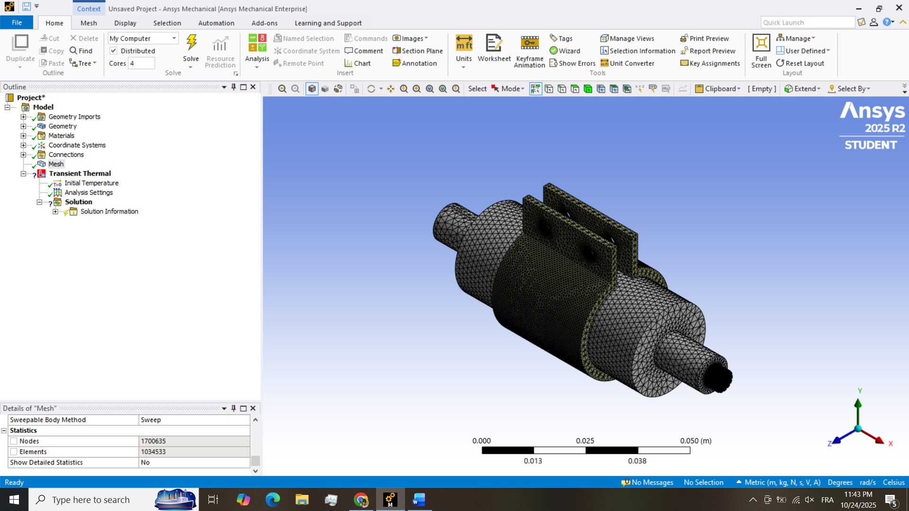
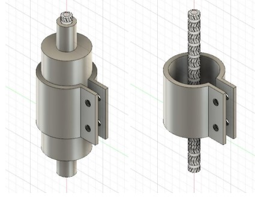

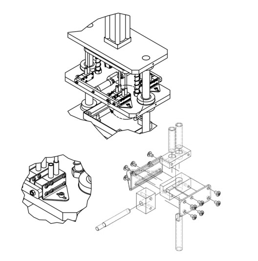
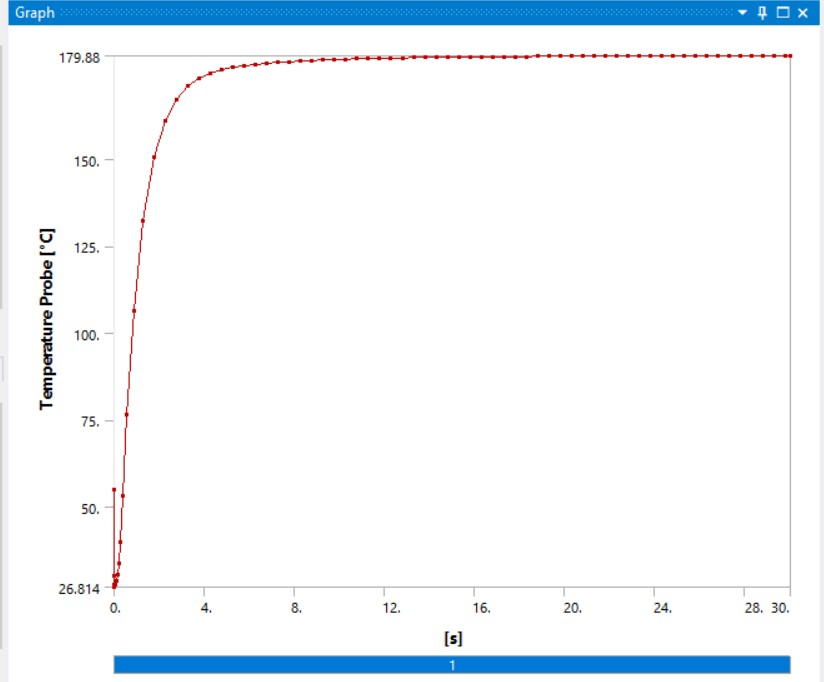
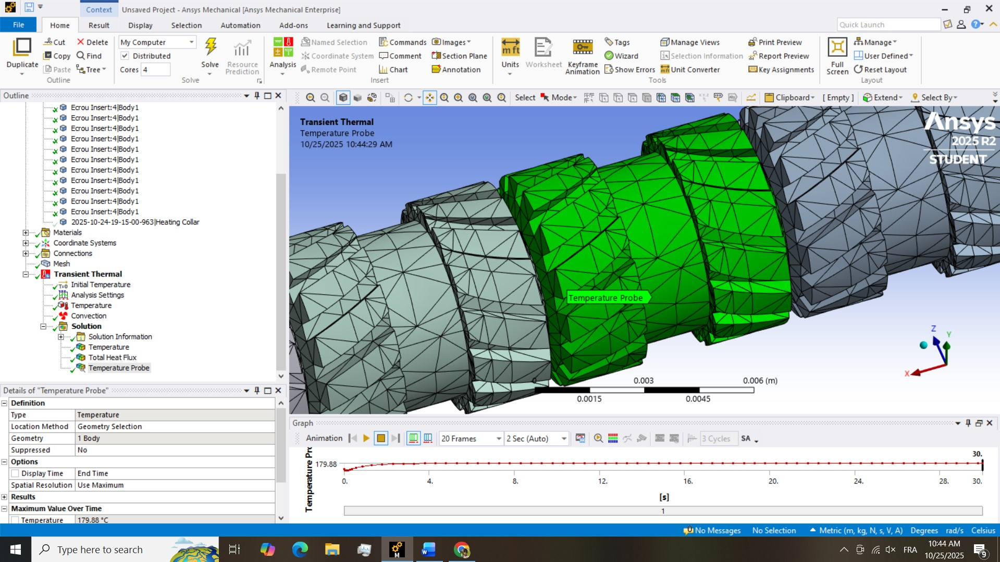
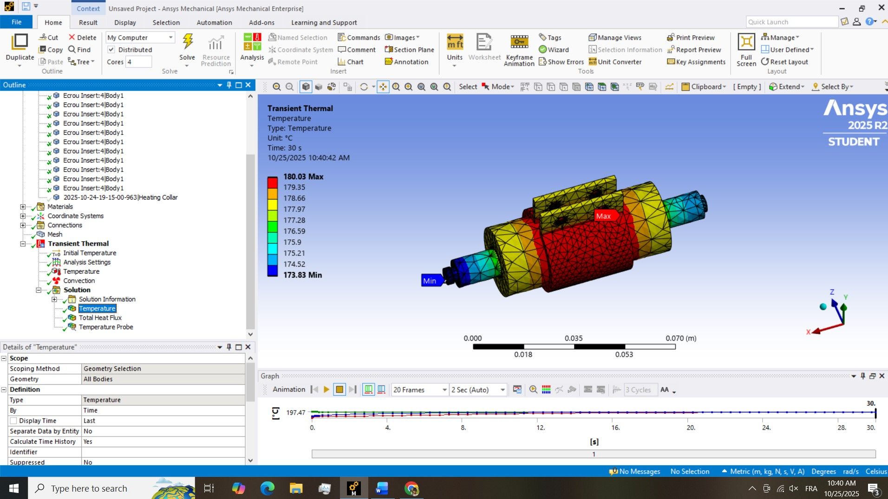
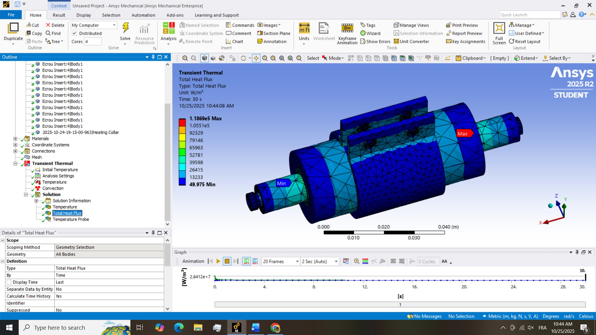
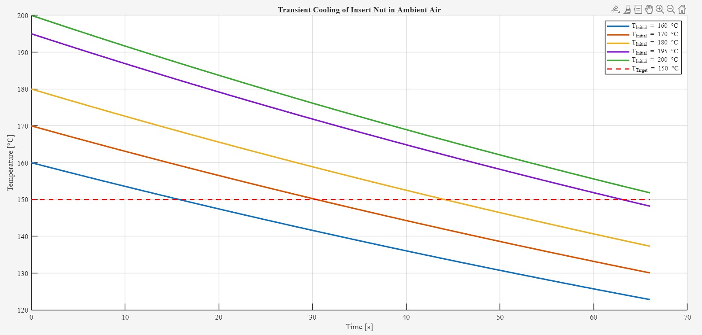
Quantified Results Summary
| Parameter | $t_{\text{LCM}}$ (Theoretical) | $t_{\text{ANSYS}}$ (Validated FEA) | Error of LCM |
|---|---|---|---|
| Time to Reach $170\degreeC$ | $4.22\text{ s}$ | $\mathbf{3.28\text{ s}}$ | +28.7% (Overestimated) |
Engineering Impact & Final Strategy
The core engineering contribution of this work is the ability to simplify the process control based on the validated data:
-
Process Cadence Validation: The target insertion cycle time is between 15 and 30 seconds. The validated heating time required to reach $170\degreeC$ is only $\mathbf{3.28}$ seconds. Since $\mathbf{3.28\text{ s} \ll 15\text{ s}}$, the heating process is confirmed not to be the bottleneck. This allows the control logic (PLC) to abandon a complex "time-based heating" routine.
-
Simplified & Reliable Control Strategy: A simpler, more robust strategy can be implemented:
- Guaranteed Heating: The heating element is simply kept ON as long as the machine is operating. The nuts will reach and maintain their equilibrium temperature well before the press is ready for insertion.
- Thermal Damage Control: Safety shifts entirely to limiting the source temperature ($T_{\infty}$) itself. By setting $T_{\infty} = 180\degreeC$, we ensure the nut stabilizes just under the critical degradation temperature of the polycarbonate, eliminating the risk of thermal damage through excessive time exposure.
The validated time of $\mathbf{3.28}$ seconds confirms that the thermal system is fully capable of meeting the required production cadence.
Recommendations and Future Work
This investigation successfully validated the thermal aspect of the process. The following steps are recommended to complete the full engineering picture and optimize the machine's performance.
A. Proposed Experimental Validation Protocol
The final step in any simulation is physical validation. It is recommended that a real-world test be conducted on the final automated press using:
- High-speed thermal imaging (IR camera): To visually confirm the temperature evolution of the nuts in the stack.
- Embedded thermocouples: To provide physical probe data that can be directly compared to the $t_{\text{ANSYS}}$ curve.
B. Future Investigation: Optimizing the Thermomechanical Process
This report answered: "How long does it take to heat the nut?" This validated thermal data now serves as the Initial Condition for the next, critical phase, which must answer: "What happens during the physical insertion?" Key questions include:
- What is the true Optimal Temperature ($T_{\text{opt}}$)? (Balancing force vs. degradation)
- What is the required Insertion Force ($F_{\text{insert}}$)? (Dictates actuator sizing)
- What is the final Joint Quality? (Pull-out force & torque resistance)
C. Required Simulation Elements and Physics
To answer these, a Coupled Thermal-Structural (Thermomechanical) Analysis is required, including:
- Viscoplastic Material Model for Polycarbonate (Temperature & Strain Rate dependent).
- Large Deformation configuration.
- Frictional Heating at the contact interface.
- Residual Stress modeling during the cooling phase.
D. Required Skills and Software
This advanced simulation requires:
- Software: ANSYS Mechanical/Workbench platform.
- Skills: Advanced expertise in Non-Linear Material Science, Advanced FEA (non-linear contact, transient solvers), and complex data interpretation (plastic strain, stress concentrations).